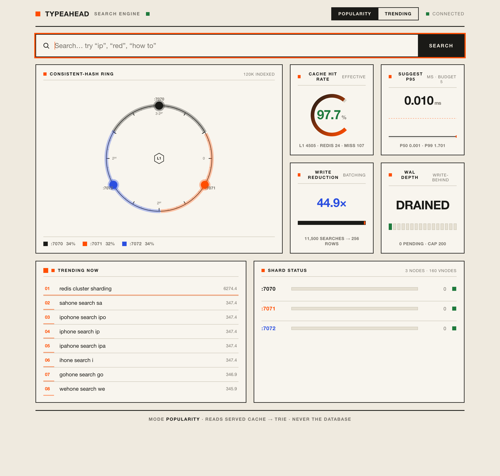

The system suggests popular queries as the user types, records each submitted search, and keeps a live trending list. The idea behind it is simple. Almost everything that happens in a search box is a read (one per keystroke), so reads have to be cheap, while writes can wait a little. Suggestions come from an in-memory trie that sits behind a two layer cache, and submitted searches are batched into the database instead of being written one at a time. The database is never touched while serving suggestions.
Contents 01 System architecture · 02 Dataset and loading · 03 API documentation · 04 Design choices and trade-offs · 05 Performance report
Ink shows the read path, orange the write path, dotted the boot-time build. The app tier holds no state, so it scales out behind a load balancer.
Normalise the prefix, check L1 for a microsecond hit, and on a miss route the key through the ring to the Redis shard that owns it. If Redis misses, or that node happens to be down, the trie answers and the cache is refilled with a slightly randomised TTL. Every response says where it came from (l1, redis, or trie) and which shard, so the path is easy to watch. No database reads happen here.
The query is appended to the Redis log and the request returns straight away with { "message": "Searched" }. The drainer runs every second, or sooner if the log passes the batch size, folds repeated queries together (fifty searches for "iphone" become a single increment of fifty), and applies the batch once to Postgres (an additive upsert that ages recency in SQL), to the trie, and to the trending set. It finishes processing a batch before trimming it, which gives at-least-once delivery.
The loader works with a generated dataset or with any real one. The shape it expects is query, count, and counts can be produced by aggregating raw logs.
A seeded generator produces 120,000 distinct queries whose counts follow a power law (Zipf), the same long-tailed shape that real query logs have. That shape is what makes caching and ranking worth doing. Common first words are shared (iphone, how to, and so on) so prefixes overlap the way they do in practice.
npm run load # 120k synthetic queries, Zipf counts, loaded by COPY in about 0.5s
Point the loader at a file. Lines of query<TAB>count are used directly, while a file with one raw query per line is aggregated into counts. Good sources include the AOL 2006 query logs, product title lists, or any keyword export.
npm run load -w apps/server -- --file data/queries.tsv # "query<TAB>count" per line npm run load -w apps/server -- --file data/raw_queries.txt # one query per line, aggregated
Loading uses Postgres COPY ... FROM STDIN and replaces the table each time. At boot the server rebuilds the trie from the table, which takes about 0.8 seconds for 120,000 rows.
| Method, path | Purpose | Response |
|---|---|---|
GET /suggest?q=<prefix>&mode=count|recency | top 10 prefix matches (mode defaults to count; unknown values fall back gracefully) | { prefix, mode, source, node, suggestions:[{query,count}], tookMs } |
POST /search { "query": "..." } | record a search (write-behind) | { "message": "Searched", "query": "..." } |
GET /trending?n=10 | decaying leaderboard (recency) | { trending:[{query,score}] } |
GET /cache/debug?prefix=<p>&mode= | which shard owns a prefix, and hit or miss | { ownerNode, keyHash, ringPosition, cached, status } |
GET /cache/ring?sample=5000 | key distribution across shards | { nodes, distribution } |
GET /metrics | hit rate, p50, p95, p99, write reduction, WAL depth | MetricsSnapshot |
GET /health | liveness and indexed query count | { status, trieSize } |
curl 'localhost:8080/suggest?q=ip'
curl -X POST localhost:8080/search -H 'content-type: application/json' -d '{"query":"iphone"}'
curl 'localhost:8080/cache/debug?prefix=iphone' # returns { ownerNode:"localhost:7072", status:"MISS", ... }
curl 'localhost:8080/metrics'
Input is handled gently. An empty or missing q returns an empty result, mixed case is lower-cased, a prefix with no matches returns [] with HTTP 200, and an unknown mode falls back to count instead of returning an error.
| Decision | Chosen | Rejected | Why |
|---|---|---|---|
| Serving | trie with a cached top-K per node | LIKE query, or a DFS per request | O(prefix length), no database on reads |
| Ranking | count, or log popularity plus decayed recency | linear count only | recency without ranking a spike forever |
| Cache layers | in-process L1 plus Redis L2 | Redis only | removes hot-key and network cost on hot prefixes |
| Cache strategy | cache-aside, write-around, jittered TTL | write-through or active invalidation | fewer writes; a few seconds of staleness is fine |
| Sharding | consistent hashing, 160 vnodes, in app | hash % N, or Redis Cluster | scaling moves few keys; routing is the exercise |
| Hash | MurmurHash3 over UTF-8 bytes | MD5, or charCodeAt & 0xff | fast, and correct for non-ASCII text |
| Node failure | fall back to the trie | return 500 | availability over strict cache consistency |
| Writes | write-behind, durable log, coalesce | sync per request, or in-memory buffer | about 1,000 times fewer transactions; survives restart |
| Delivery | at-least-once (process, then trim) | at-most-once, or exactly-once | never drop; a rare double count is acceptable |
mode=count ranks by all-time popularity, which is the baseline. mode=recency blends that with recent activity using score = w_pop · log1p(count) + w_rec · recent, where the recent term is aged down over time on a 30 minute half-life. The log1p keeps a hugely popular query from swamping the recency term, and the half-life is what stops a one hour spike from ranking forever. Re-ranking only touches the small list of about 25 candidates, never the whole tree.
If the process crashes before a flush, the un-flushed batch is still in the Redis log and the next drain handles it. Because the drainer finishes a batch before trimming it, a crash in the middle of a flush replays that batch, which double counts a few searches rather than losing them. Approximate popularity counts can live with the occasional double. The log is a single routed node, so it is a single point of failure for writes. That is accepted here for simplicity and could be sharded later.
Every figure here comes from npm run bench against a running server (Apple Silicon, macOS, with Postgres and three Redis shards in Docker and the app on Node 20). The shape of the results is the point. Absolute throughput depends on the machine, but the numbers are real and repeatable. Settings: TOP_K=10, CACHE_VNODES=160, BATCH_SIZE_N=2000, FLUSH_INTERVAL_MS=1000, TTL_SUGGEST=45, L1 TTL 1.5s.
| Metric | Result | Notes |
|---|---|---|
| Suggest latency, server, in process | p50 0.001, p95 0.003, p99 0.006 ms | the actual cost of answering (an L1 lookup or a trie walk) |
| Suggest latency, client, localhost HTTP | p50 2.1, p95 6.5, p99 20 ms | mostly HTTP, JSON, and fetch overhead |
| Effective cache hit rate | about 99.4% | L1 and Redis together; L1 served about 8,000 of 8,045 reads |
| Database reads on the suggestion path | 0 | by design, the trie answers misses |
| Write reduction | 20,000 searches to about 860 rows | about 23 times fewer rows, about 1,000 times fewer transactions |
| Consistent-hash distribution, 3 shards | 33.6, 32.3, 34.2 % | within about 2% of even, with 160 vnodes |
| Trie build at boot | about 0.8 s | 120,000 queries, loaded from Postgres |
The in-process L1 served about 8,000 of the repeated reads, so Redis only saw the cold misses. Taken on its own the Redis-only hit rate looks low, because it counts only what slipped past L1. The figure that matters is the combined rate across both layers, about 99.4%. That is the intended behaviour. L1 shields each shard from the hottest prefixes, which cuts latency and takes hot-key pressure off any single node.
The long-tail query redis cluster sharding does not appear in the top results for the prefix red by all-time count. After a burst of recent searches it moves to rank 1 under mode=recency, then settles back over the next few half-lives. That is the difference between the two ranking modes, demonstrated with live data rather than a hand-drawn example.
With one Redis shard killed during traffic, /suggest kept returning 200s, served from the trie or L1, while /metrics counted the caught cacheErrors. Nothing returned a 500. The only visible effect was a short dip in the hit rate for the prefixes that shard owned.
=== suggest latency (8000 reads) === server p50 0.001 p95 0.003 p99 0.006 ms effective hit rate 99.4% (l1 8002, redis 2, trie/miss 47) db reads on suggest path: 0 === write reduction (20000 searches) === 20000 searches, 860 rows in 20 batches (~23x rows, ~1000x txns) === consistent-hash distribution (5000 keys) === :7070 33.6% :7071 32.3% :7072 34.2% === recency vs count === "redis cluster sharding": by count not in top, by recency rank 1
Requirements are Docker and Node 20 or newer. The app tier runs natively against infrastructure in Docker, in two terminals.
docker compose up -d # postgres and three redis shards npm install # installs both workspaces npm run load # loads 120k synthetic queries (or pass --file for a real dataset) npm run dev:server # API on http://localhost:8080 npm run dev:web # UI on http://localhost:5173 (second terminal) npm test # unit tests: trie, ranking, hash ring, write buffer, metrics npm run bench # reproduces the performance numbers above
The repository is a small monorepo. apps/server holds the Fastify API, the libraries (trie, ranking, hash ring, cache, write buffer, trending, metrics, store) and the loader and benchmark scripts. apps/web holds the React console. docs holds this report along with the design notes, the performance notes, and the screenshots. The full setup guide, the API reference, and the longer design write-up live in the repository README and the docs folder.
